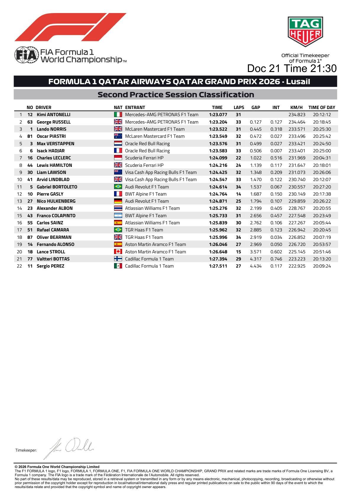

Session Results
Official FIA and Formula1.com classifications — 2 session(s) available.
FIA official session classifications
Official source; curated transcription may await review. Linked PDFs are the authority. Discovery does not extract or verify numeric values, and does not replace the curated material below.
Last successful FIA document discovery: 2026-11-28T03:58:42.692413+00:00. This is retrieval time, not issue time; newer revisions may exist.
- 2026_qatar_grand_prix_-_free_practice_2_classification.pdf (official PDF)
- 2026_qatar_grand_prix_-_free_practice_1_classification.pdf (official PDF)
Practice 1
Official Formula1.com classification · retrieved 2026-11-28T03:59:36+00:00
Tyres: FastF1 compound for the matching best lap (per knockout segment in qualifying). Unknown means timing or compound data is unavailable or does not match the published time.
| Pos. | No. | Driver | Team | Time / Gap | Tyre | Laps |
|---|---|---|---|---|---|---|
| 1 | 12 | Kimi Antonelli ANT | Mercedes | 1:23.217 | Unknown | 31 |
| 2 | 63 | George Russell RUS | Mercedes | +0.507s | Unknown | 29 |
| 3 | 6 | Isack Hadjar HAD | Red Bull Racing | +0.661s | Unknown | 25 |
| 4 | 1 | Lando Norris NOR | McLaren | +0.850s | Unknown | 26 |
| 5 | 81 | Oscar Piastri PIA | McLaren | +0.860s | Unknown | 30 |
| 6 | 3 | Max Verstappen VER | Red Bull Racing | +0.916s | Unknown | 26 |
| 7 | 16 | Charles Leclerc LEC | Ferrari | +1.256s | Unknown | 30 |
| 8 | 44 | Lewis Hamilton HAM | Ferrari | +1.358s | Unknown | 27 |
| 9 | 41 | Arvid Lindblad LIN | Racing Bulls | +1.384s | Unknown | 27 |
| 10 | 10 | Pierre Gasly GAS | Alpine | +1.657s | Unknown | 28 |
| 11 | 5 | Gabriel Bortoleto BOR | Audi | +1.836s | Unknown | 25 |
| 12 | 43 | Franco Colapinto COL | Alpine | +2.192s | Unknown | 28 |
| 13 | 27 | Nico Hulkenberg HUL | Audi | +2.220s | Unknown | 29 |
| 14 | 30 | Liam Lawson LAW | Racing Bulls | +2.376s | Unknown | 27 |
| 15 | 51 | Rafael Camara CAM | Haas F1 Team | +2.468s | Unknown | 26 |
| 16 | 23 | Alexander Albon ALB | Williams | +2.475s | Unknown | 26 |
| 17 | 87 | Oliver Bearman BEA | Haas F1 Team | +2.549s | Unknown | 26 |
| 18 | 55 | Carlos Sainz SAI | Williams | +2.775s | Unknown | 27 |
| 19 | 34 | Jak Crawford CRA | Aston Martin | +3.089s | Unknown | 25 |
| 20 | 18 | Lance Stroll STR | Aston Martin | +3.199s | Unknown | 21 |
| 21 | 11 | Sergio Perez PER | Cadillac | +3.469s | Unknown | 25 |
| 22 | 77 | Valtteri Bottas BOT | Cadillac | +3.692s | Unknown | 27 |
Practice 2
Official Formula1.com classification · retrieved 2026-11-28T03:59:36+00:00
Tyres: FastF1 compound for the matching best lap (per knockout segment in qualifying). Unknown means timing or compound data is unavailable or does not match the published time.
| Pos. | No. | Driver | Team | Time / Gap | Tyre | Laps |
|---|---|---|---|---|---|---|
| 1 | 12 | Kimi Antonelli ANT | Mercedes | 1:23.077 | Unknown | 31 |
| 2 | 63 | George Russell RUS | Mercedes | +0.127s | Unknown | 33 |
| 3 | 1 | Lando Norris NOR | McLaren | +0.445s | Unknown | 31 |
| 4 | 81 | Oscar Piastri PIA | McLaren | +0.472s | Unknown | 32 |
| 5 | 3 | Max Verstappen VER | Red Bull Racing | +0.499s | Unknown | 31 |
| 6 | 6 | Isack Hadjar HAD | Red Bull Racing | +0.506s | Unknown | 33 |
| 7 | 16 | Charles Leclerc LEC | Ferrari | +1.022s | Unknown | 22 |
| 8 | 44 | Lewis Hamilton HAM | Ferrari | +1.139s | Unknown | 24 |
| 9 | 30 | Liam Lawson LAW | Racing Bulls | +1.348s | Unknown | 32 |
| 10 | 41 | Arvid Lindblad LIN | Racing Bulls | +1.470s | Unknown | 33 |
| 11 | 5 | Gabriel Bortoleto BOR | Audi | +1.537s | Unknown | 34 |
| 12 | 10 | Pierre Gasly GAS | Alpine | +1.687s | Unknown | 14 |
| 13 | 27 | Nico Hulkenberg HUL | Audi | +1.794s | Unknown | 25 |
| 14 | 23 | Alexander Albon ALB | Williams | +2.199s | Unknown | 32 |
| 15 | 43 | Franco Colapinto COL | Alpine | +2.656s | Unknown | 31 |
| 16 | 55 | Carlos Sainz SAI | Williams | +2.762s | Unknown | 30 |
| 17 | 51 | Rafael Camara CAM | Haas F1 Team | +2.885s | Unknown | 32 |
| 18 | 87 | Oliver Bearman BEA | Haas F1 Team | +2.919s | Unknown | 34 |
| 19 | 14 | Fernando Alonso ALO | Aston Martin | +2.969s | Unknown | 27 |
| 20 | 18 | Lance Stroll STR | Aston Martin | +3.571s | Unknown | 15 |
| 21 | 77 | Valtteri Bottas BOT | Cadillac | +4.317s | Unknown | 29 |
| 22 | 11 | Sergio Perez PER | Cadillac | +4.434s | Unknown | 27 |
Official FIA document screenshots
Automatically rendered from the official PDFs. These figures do not update or verify the curated numeric transcriptions above. Unchanged pages already illustrated above are not repeated here.
2026_qatar_grand_prix_-_free_practice_2_classification.pdf
PDF retrieved 2026-11-28T03:58:45+00:00; this is not its issue date.

2026_qatar_grand_prix_-_free_practice_1_classification.pdf
PDF retrieved 2026-11-28T03:58:45+00:00; this is not its issue date.